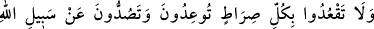
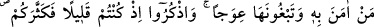
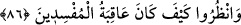

Şuayb (a.s.)’ın bazı mucizeleri el-Keşşaf’ta zikredilmiştir. Oraya bakılabilir.
“Ölçüyü ve tartıyı tam yapın.” Kâdî Beydâvî, buradaki “ölçü”yü ölçü aleti olarak,
Ebüssuûd Efendi ise sonraki “el-mîzân” kelimesini de dikkate alarak onu “ölçek”
olarak tefsir etmiştir.
Medyen halkının iki ölçeği ve iki tartısı vardı. Bunlardan biri diğerinden daha
büyüktü. Onlar, insanlardan bir şey satın aldıkları zaman büyük ölçeği kullanarak
ölçüyü tam yapıyorlardı. Kendileri onlara bir şey sattıkları zaman küçük ölçeği
kullanarak ölçü ve tartıyı eksik yapıyorlardı. Bu sebeple Şuayb (a.s.) onlara, ölçü ve
tartıyı tam yaparak insanların haklarını ödemelerini söyledi.
“İnsanların” tamam olduğuna itimad ederek bu ölçü ve tartıyla satın aldıkları
“eşyalarını” ne olursa ve miktarı ne kadar olursa olsun “eksik vermeyin.” Çünkü,
onlar değerli veya değersiz, az veya çok olsun insanların mallarını eksiltiyorlardı.
Ayette “haklarını” kelimesi değil de “eşyâlarını” kelimesinin kullanılması, mânâyı daha
da umûmîleştirmek içindir. Çünkü “şey” mefhumu, “hak” mefhumundan daha geneldir.
Ölçerken ve tartarken insanların haklarını eksiltmek, nefsin hasisliği, himmetin
düşüklüğü, hırsın fazlalığı, hevâ ve zulme uymaktan ileri gelir. Bu yerilmiş sıfatlar,
nefislerin huylarındandır. Şeriat, bu kötü sıfatların değiştirilmesini ve nefsin tezkiye
edilmesini emretmiştir. Çünkü Allah kıymetli işleri sever ve değersiz işlere buğz eder.
Bir hadiste şöyle buyurulmuştur: “Koyun sürüsüne saldıran iki aç kurt, kişinin mal
ve şeref hırsından daha zararlı değildir.”[63] Başka bir hadiste ise şöyle
buyurulmuştur: “Namaz emanettir, abdest emanettir, tartı emanettir ve ölçü
emanettir.”
Rivayet edildiğine göre Rasûlullah (s.a.v.) ashâbına şöyle buyurmuştur: “Ölçüye ve
tartıya dikkat edin! Siz, geçmiş ümmetlerin helâkına sebeb olan bir işi
üstlendiniz.”[64]
“Islah edildikten” peygamberler ve onlara tâbî olanlarca şeriatlerin ahkâmının
icrâsıyle durumlarını ve halkını ıslah ettikten “sonra yeryüzünde” küfür ve zulümle
“bozgunculuk yapmayın; eğer” bana ve bu sözüme “inananlar” tasdik eden kimseler
“iseniz böylesi” onun emirlerine uyup yasaklarından uzak durmak “sizin için” ölçü ve
tartıda haksızlıktan ve yeryüzünde bozgunculuk yapmaktan “daha iyidir.”
86. Tehdit ederek, inananları Allah yolundan alıkoyarak ve o yolu eğip bükmek
isteyerek öyle her yolun başında oturmayın. Düşünün ki siz az idiniz de O’ sizi
çoğalttı. Bakın ki, bozguncuların sonu nasıl olmuştur!